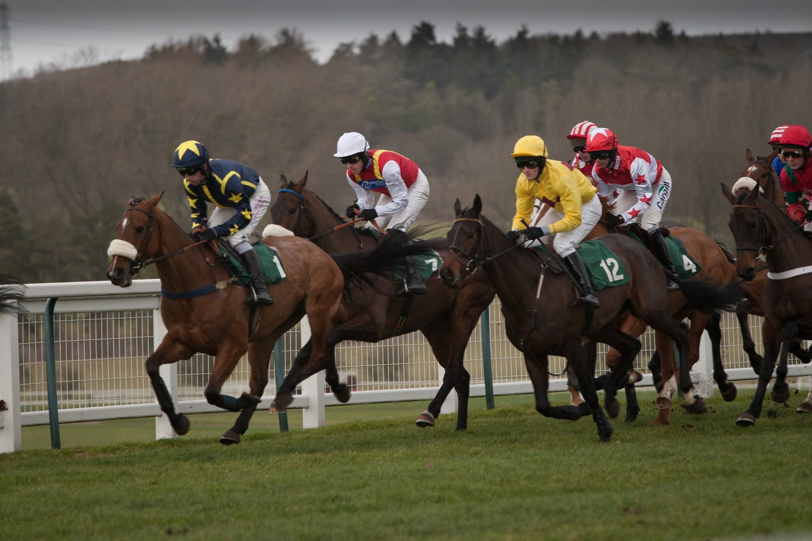

Calandagan defiende en Ascot las Champion Stakes que ganó esperando atrás
El pupilo de Francis-Henri Graffard, con seis victorias de Grupo I en dieciocho salidas, defiende el sábado su título en las Qatar Racing Champion Stakes. El año pasado las ganó desde atrás y sin precipitarse.

El caballo de los Aga Khan Studs ha corrido más veces fuera de Francia que en su país de entrenamiento: once salidas entre Emiratos Árabes Unidos, Japón e Inglaterra. Ascot es el hipódromo donde más veces se le ha visto, y allí vuelve con cinco años y dos Grupos I más sumados en 2026.
Su historia en esa pista empezó a los tres años, con la victoria en las King Edward VII Stakes (G2) del Royal Ascot. Meses después, en su primer intento en las Champion Stakes, no pudo ganar. A los cuatro salió de Ascot sin conocer la derrota: dos carreras, dos victorias y el doblete King George/Champion Stakes. En julio de este año se quedó cerca de repetir en la King George, pero Kalpana, que había terminado por detrás de él doce meses antes, se tomó la revancha.
La edición del año pasado explica cómo corre el hijo de Gleneagles. Con Mickaël Barzalona en la silla, salió bien del partidor, pero no peleó por la posición. Dejó a otros la cabeza y el ritmo, y se acomodó décimo y penúltimo, en segunda línea.
Ese plan necesita tren, y lo hubo. Al acercarse la campana que anuncia la recta, Barzalona lo sacó por el flanco del pelotón y Calandagan avanzó hasta la octava plaza. A 400 metros de la meta era cuarto, todavía sin el mando. Por fuera y bien equilibrado, desbordó a los rivales atrapados junto a los palos o encerrados entre caballos que ya no progresaban.
La clave estuvo en no tomar la cabeza demasiado pronto. Su aceleración en los últimos parciales le bastó para aguantar hasta el poste. Ombudsman, que lo había seguido desde la salida, no pudo hacer más que empujar detrás de él. Almaqam, siempre bien colocado, vio cómo se le esfumaba la ventaja y acabó tercero.
Para el sábado se espera el mismo guion: Calandagan esperando en la primera parte del recorrido.
Fichas: M. Barzalona (jinete)
Por Martín Larrañeta